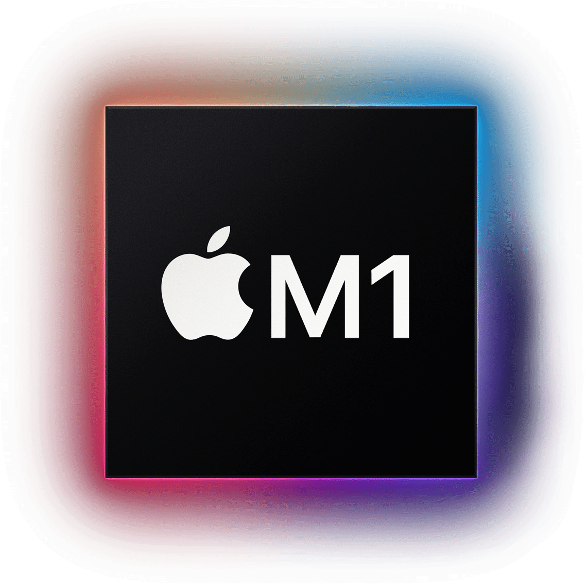
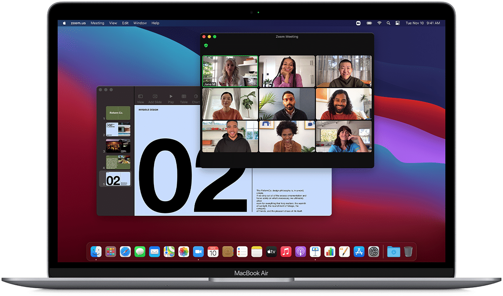
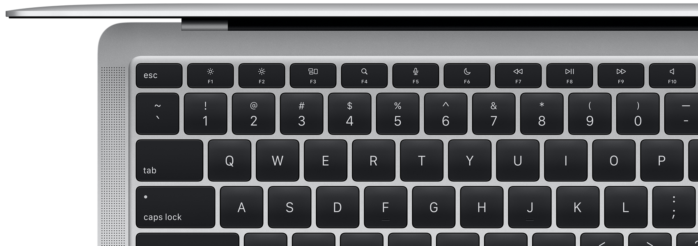
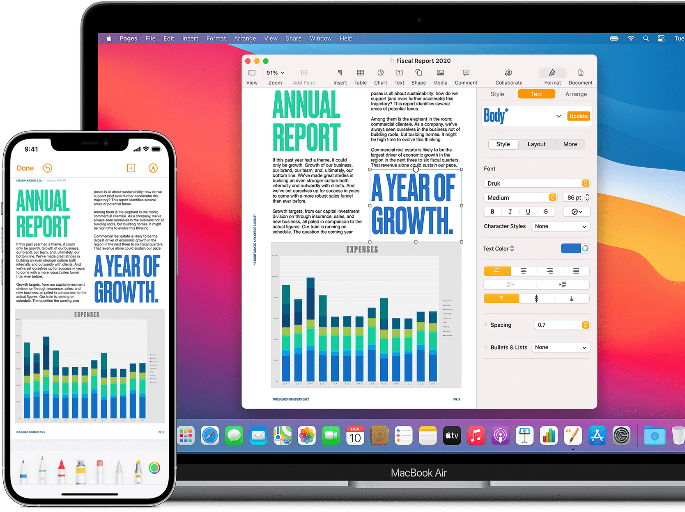
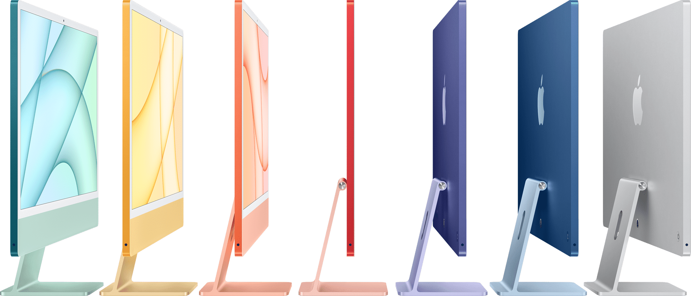
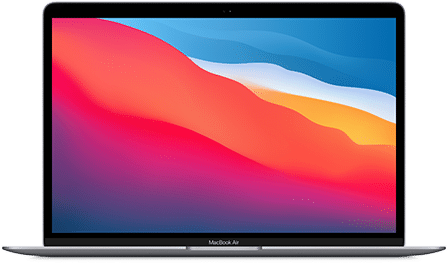
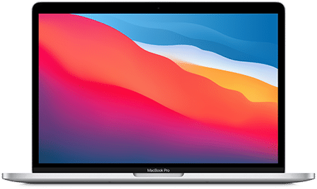
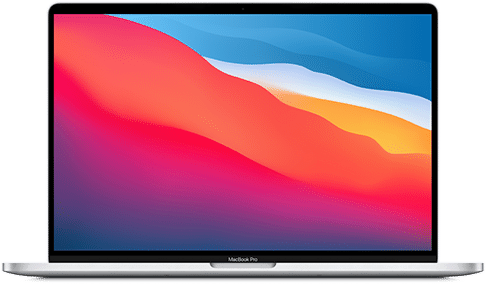
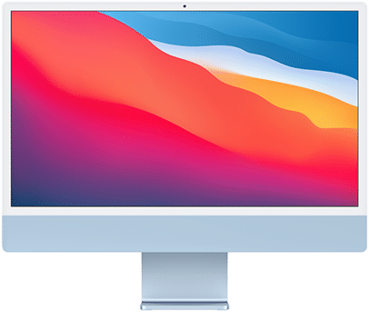

The Apple M1 chip changes everything. Custom technologies.
Blazing-fast processing. And incredible power efficiency. In short,
it's a breakthrough for breakthroughs. For your entire team.
The Apple M1 chip (PDF)

Reason #2
One seriously powerful chip.
The Apple M1 chip changes everything. Custom technologies.
Blazing-fast processing. And incredible power efficiency. In short,
it's a breakthrough for breakthroughs. For your entire team.

Reason #3
Our loooo oooooooo oooongest battery life.
With jaw-dropping battery life - up to 18 hours-MacBook Air delivers
the power to work where, how and for as long as you want.
Reason #4
Mac works with IT.
Set up devices from anywhere with zero-touch deployment. And manage
Mac at any scale with mobile device management.
Deployment and Management (PDF)
Reason #5
Mac works for companies without IT.
Mac is intuitive to use and easy to manage. Simple setup and Apple's
Migration Assistant help you get Mac up and running quickly. And its
reliable hardware won't let you down, so it's perfect for companies
with or without dedicated IT support.
Reason #6
Mac costs less in the 84 long run.
With fewer support tickets, less software needed and higher residual
value, the savings add up.
Forrester TEI Study (PDF)
Reason #7
The most innovative companies run on Mac.
84% of the world's top innovators deploy Mac at scale.

Reason #8
Excel.Zoom.Slack. And so much more.
All the business apps you need run beautifully on Mac - from Microsoft
365 and Google Workspace to SAP and Dropbox.5 And thanks to the Apple
M1 chip, popular iPhone and iPad apps for work can now run on Mac too.
Productivity (PDF)
Reason #9
Security's built right in.
Mac is the most secure personal computer on the planet, thanks to
built-in features like hardware-verified secure boot, on-the-fly
encryption, Touch ID and Gatekeeper.
Platform Security (PDF)
Reason #10
Mac ❤️ iPhone.
Mac feels just like the Apple devices employees know and love and they
all work together seamlessly. Copy and paste across devices. Extend
your screen. And pick up calls anywhere.

Reason #11
It's a pleasure to work with.
Give your team the devices they love and let them get down to
business.
Employee Choice Guide (PDF)


MacBook Air
Power and value in one package. MacBook Air is perfect for businesses,
no matter their size.

MacBook Pro 13"
The Apple M1 chip takes the powerhouse notebook to a whole new level
of pro.

MacBook Pro 16"
Incredible processing and a big. beautiful display make it the go-to
for big, beautiful work.

iMac 24"
The can-do desktop gives you more ports, more power and more
versatility.
1. Testing conducted by Apple in October 2020 using pre-production
MacBook Air systems with Apple M1 chip and 8-core GPU, as well as
production 1.2GHz quad-core Intel Core i7-based MacBook Air systems, all
configured with 16GB RAM and 2TB SSD. Tested with pre-nilease Final Cut
Pro 10.5 using a 55-second clip with 4K Apple Profles RAW media, at
400x2160 resolution and 59.94 frames per second transcoded to Apple
Profen 422 Partomance Tests are conducted using specific computer
systems and reflect the approximate performance of MacBook Air.
2. Testing conducted by Apple in October 2020 using pre-production
MacBook Air systems with Apple M1 chip and 8-core GPU, configured with
BGB of RAM and 512GB SSD. The Apple TV apo move playback marye by
playing back 1080p HD content with display brightness set to 8 clicks
from the bottom. Battery life varies by use and configuration. See
apple.com/in/batteries for more
information.
3. This study was commissioned by Apple and delivered by Forrester
Consulting.